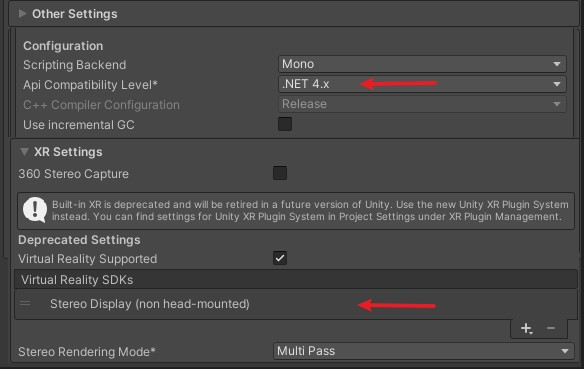

从空工程工程开始
一、导入Kmax SDK
二、创建场景
1、添加KmaxVR对象
- 移除或者不激活默认的
Main Camera - 在
Hierarchy面板右键，选择Kmax/Add KmaxVR
2、添加射线笔输入支持
- 创建一个或使用已有的
Event System - 在
Hierarchy面板中选择Event System右键，选择Kmax -> Convert to StylusInputModule
3、让UI吸附到屏幕上
- 创建一个或使用已有的
Canvas - 把
Render Mode修改为World Space - 在
Hierarchy面板中选择目标Canvas右键，选择Kmax -> Fix Canvas
Unity2019及以下版本配置
- 选择
File -> Build Settings -> Player Settings打开Project Settings面板。 - 在
Project Settings面板，选择Player -> Other Settings -> Configuration -> Api Compatibility Level中选择.Net 4.X。 - 在
XR Settings -> Deprecated Settings -> Virtual Reality Supported中选择开启(需要加载片刻...)- 删除
Virtual Reality SDKs中的Oculus。 - 删除
Virtual Reality SDKs中的OpenVR。 - 新增
Virtual Reality SDKs中的Stereo Display (non head-mounted)。 
- 删除
Unity2020及以上版本
SDK内部完成立体显示的部分，不再依赖Unity的Stereo Display (non head-mounted)
项目无需做额外的配置，场景中包含KmaxVR对象即可
Warning
Unity2020开始已经XR Settings已经迁移至XR Plug-in Management
Stereo Display (non head-mounted)不再受到支持